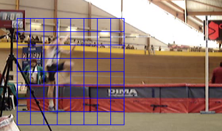
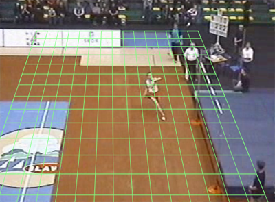
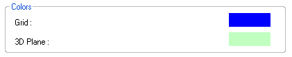

Using the 2D Grid and the 3D Plane
This guide shows how to handle the two dimensions grid, the three dimensions plane, and how to change their colors.
1. The two-dimensions Grid
Use the menu Image > Grid.
A grid is diplayed on the image.

Move the grid around by draging it with the mouse. (Keep left button pushed and move around)
Enlarge or reduce grid size by draging the mouse and holding the CTRL key down at the same time.
Increase or decrease the number of divisions by draging the mouse and holding the ALT key down at the same time.
2. The 3D Plane.
Use the menu Image > 3D Plane, to display a similar grid, but that you can manipulate in space.

Move the Plane around by draging it with the mouse. (Keep left button pushed and move around)
The Plane can be moved left / right and up / down, but not forward / backward.
Freely rotate the Plane by draging the mouse and holding the CTRL key down at the same time.
Increase or decrease the number of divisions by draging the mouse and holding the ALT key down at the same time.
3. Change Grid or Plane Color
You can change Grid's and Plane's color through the General Preferences dialog box.
Menu : Options > Preferences...
Then select the Play/Analysis tab.

Click on the colored rectangles to choose new colors.